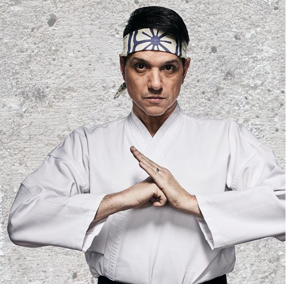

Não somos o site oficial da "Larusso Auto Group.ltda", mas sim um site criado por fãs em homenagem ao "Daniel LaRusso", personagem principal da trilogia "Karate Kid", interpretado por Ralph Macchio, ator norte-americano de origem italiana. Depois da trilogia, Ralph estrelou ainda como papel de coadjuvante interpretando ainda Daniel Larusso na série Cobra Kai. Ainda teve outros papéis, porém de menor destaque.
The Karate Kid (o primeiro da trilogia) é um filme de artes marciais e drama romântico norte-americano de 1984 do diretor John G. Avildsen e escrito por Robert Mark Kamen, estrelado por Ralph Macchio e Noriyuki "Pat" Morita e Elisabeth Shue. O filme conta a história de um jovem lutador que deseja aprender caratê, e para isso convence um experiente mestre a lhe dar aulas, que acabam por transformar-se em lições de vida.
Por esse filme, Pat Morita recebeu uma indicação de melhor ator coadjuvante no Óscar daquele ano e também uma indicação na mesma categoria ao Globo de Ouro.
Daniel Larusso nasceu em Nova Jersey no dia 18 de dezembro de 1968, ele é filho de David Larusso e Lucille Larusso. Ele passou a maior parte da sua infância na cidade de Nova York
Pelo o que é mencionado nos filmes, o Daniel sempre teve muito carinho dos pais, ele era sempre uma criança muito feliz, mas algo iria mudar a sua forma de encarar o mundo e lhe colocar um grande e pesado fardo de responsabilidades, seu pai descobriu que estava com uma doença grava e logo estaria em estado terminal. David Larusso se foi quando Daniel tinha apenas 8 anos de idade.
Sem o pai e com a mãe tendo que se desdobrar para sustentar o filho, Daniel encontrou um abrigo, uma válvula de escape, em uma associação voltada para jovens de baixa renda, onde ele participava de atividades recreativas e fazia cursos, foi nessa espécie de ONG que Daniel teve seus primeiros contatos com o Caratê.
Foi em 1984 quando sua mãe conseguiu emprego numa empresa de tecnologia, fazendo com que ela e Daniel se mudassem para a Califórnia e isso o deixou bastante deprimido, pois ele não queria mudar de cidade, entretanto, tudo muda na vida de Daniel logo quando ele chega na casa nova. Após fazer amizade e ser convidado para uma festa, sua mãe pede para ele encontrar um senhor que consertava coisas pelo bairro, pois a torneira da casa estava com problemas e é nesse momento que temos o primeiro encontro de Daniel Larusso com o senhor ranzinza que fazia reparos domésticos, este senhor oriental chamava-se Sr. Miyagi.
Daniel vai para a festa que fora convidado e lá conhece Ali Mills, ele se apaixona imediatamente pela garota e enquanto flertava e ensinava Ali a fazer embaixadinhas Daniel é surpreendido pelo ex-namorado da garota, Johnny Lawrence, atual campeão de caratê de All-Valley. As coisas esquentaram quando Johnny vai conversar com Ali e quebra o rádio portátil da garota, Daniel tenta interferir e é agredido por Johnny. A partir deste momento, Johnny e seus amigos passam a perseguir Daniel para cometer agressões e humilhações constantes, mesmo assim Daniel continua a ver Ali na escola e reage sempre as provocações de forma muito divertida. As coisas pioram quando na festa de Halloween, fantasiados de esqueletos, o grupo de Johnny persegue Daniel e o espancam até ele ficar desacordado. É nesta cena que Miyagi entra em ação e derrota o grupo.
Tempos depois, Miyagi e Daniel vão até o dojo “Cobra Kai” e Miyagi pede para que parem de perseguir Daniel, mas o sensei John Kreese rejeita o pedido e desafia o Miyagi, que decide treinar Daniel para lutar no torneio de All-Valley. Eles começam a ter uma relação muito próxima e Daniel passa a ver em Miyagi uma figura paterna.
Daniel Vence Johnny Lawrence em uma luta emocionante e se torna o novo campeão de All-Valley. Depois disso, nós temos os eventos dos próximos filmes e, após ganhar pela segunda vez, Daniel, sem dinheiro para a faculdade, se dedicou a loja de bonsais juntamente com o seu mestre e amigo Sr. Miyagi, uma relação de pai e filho a qual chegaram a morar juntos durante todo o período que a sua mãe havia voltado para Nova Jersey para cuidar do seu tio.
No início dos anos 90 Daniel finalmente foi a faculdade e conseguiu um emprego numa loja de carros usados onde foi instruído a vender carros a qualquer custo. Sr. Miyagi disse que ele deveria seguir seu coração e ser honesto e, aprendendo a ouvir os seus clientes e sempre a ser prestativo, Daniel se destacou se tornando um excelente vendedor. Neste período, Daniel conheceu Amanda e eles logo se casaram.
Em 2002 Amanda já estava grávida de sua primeira filha, Samantha, no qual levou Daniel a fazer a jogada mais arriscada de sua vida, abrindo a primeira concessionaria “Larusso Auto”, que acarretou num enorme sucesso de vendas. Alguns anos depois Amanda fixa gravida novamente, o seu filho mais novo, Anthony.
No auge do seu sucesso profissional, Daniel teve uma outra grande perda na sua vida, o seu grande mestre, amigo e figura paterna Sr. Miyagi o deixou em 2011. Daniel mais uma vez ficou sem o seu ponto de equilíbrio, que passou despercebido por anos, até que um dia ele descobre que o dojo “Cobra Kai” foi reaberto, trazendo de volta todos os fantasmas do seu passado. Daniel Larusso, 34 anos depois, um empresário bem-sucedido que, após encontrar seu principal rival, precisará encontrar o equilíbrio sem o seu principal mentor para lidar com o seu passado que voltou à tona, ameaçando tudo o que ele conquistou (início da série de sucesso “Cobra Kai).
(Fonte: Charlie Borba)